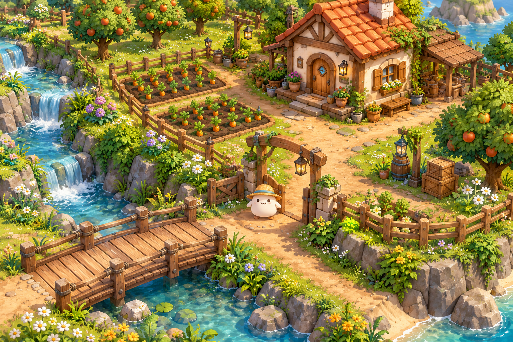
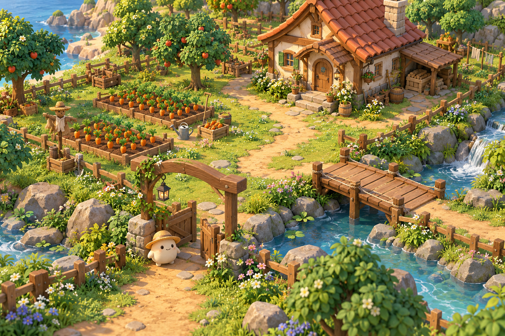
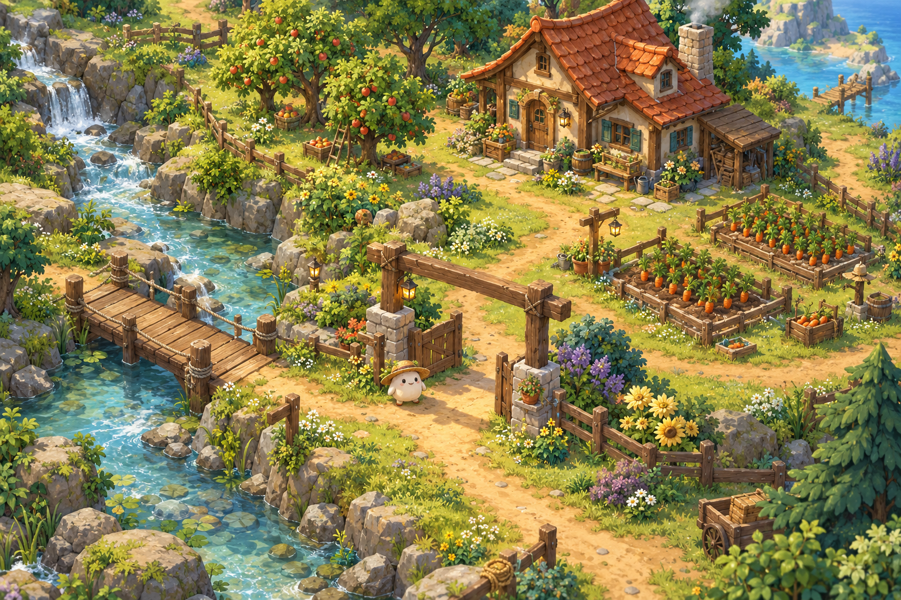
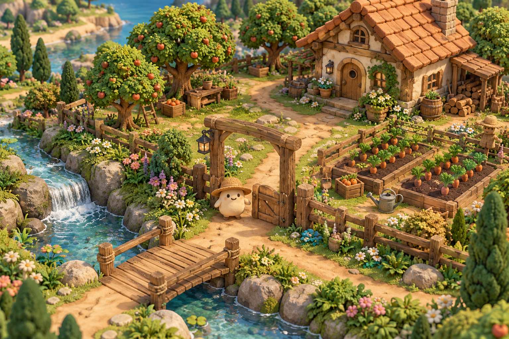

01 · COLORFUL FARM
مزرعة كرتونية نابضة
ألوان غنية، أسطح مرسومة وتفاصيل واضحة. الأقرب لاتجاه ألعاب المزارع الملونة الذي وصفته.
بوابة المزرعة، موشي، البيت، المحاصيل والجسر — نفس الفكرة بأربعة أساليب مختلفة. اضغط على أي صورة لمشاهدتها كاملة.
هذه صور تصوّر فني مولّدة للمقارنة، وليست مشاهد لعب متحركة. اختيارك هنا لا يغيّر اللعبة الحالية؛ نراجع الأسلوب أولًا ثم نبني التفاعل والأصول المناسبة له.

ألوان غنية، أسطح مرسومة وتفاصيل واضحة. الأقرب لاتجاه ألعاب المزارع الملونة الذي وصفته.

أشكال مستديرة، خامات ناعمة وظلال تمنح المكان عمقًا. إحساس مريح وهادئ.

خشب وحجر وأوراق بتفاصيل أوضح، وإضاءة دافئة. اتجاه أكثر هدوءًا وأقرب لمغامرة ريفية.

خامات ملموسة وتفاصيل مصنوعة يدويًا، مع أشكال مرحة. اتجاه له شخصية بصرية مختلفة.
جرّب المشهد التفاعلي بأسلوب المزرعة الملونة ← · تحية بالكود، حركة موشي ومساعدة متدرجة.